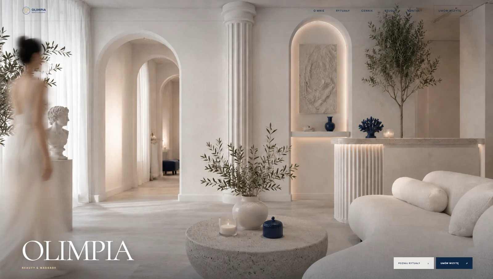

Nowoczesna Grecja
Kolumny, kamień i granat tworzą charakter bez dosłownej dekoracyjności.
Case study / beauty & wellness
Strona salonu beauty i masażu oparta na jasnej, śródziemnomorskiej przestrzeni, klasycznych detalach oraz prostej ścieżce od rytuału do umówienia wizyty.

Cel projektu
Projekt miał odróżnić salon od klasycznych stron beauty i stworzyć zapamiętywalny świat marki. Jasna architektura, granatowe detale i spokojne przejścia budują atmosferę, a oferta, cennik i kontakt pozostają łatwe do znalezienia.
Kolumny, kamień i granat tworzą charakter bez dosłownej dekoracyjności.
Usługi są pokazane jako doświadczenia, nie przypadkowy katalog zabiegów.
Nawigacja i CTA utrzymują prostą ścieżkę do umówienia wizyty.
Masz własną markę?